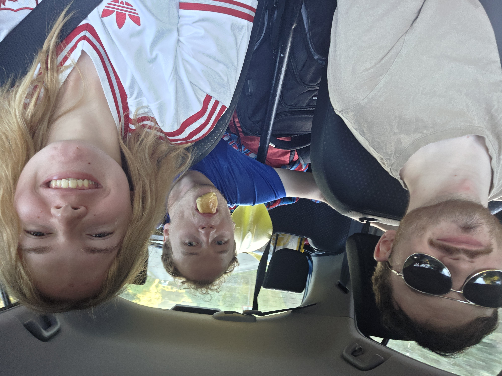
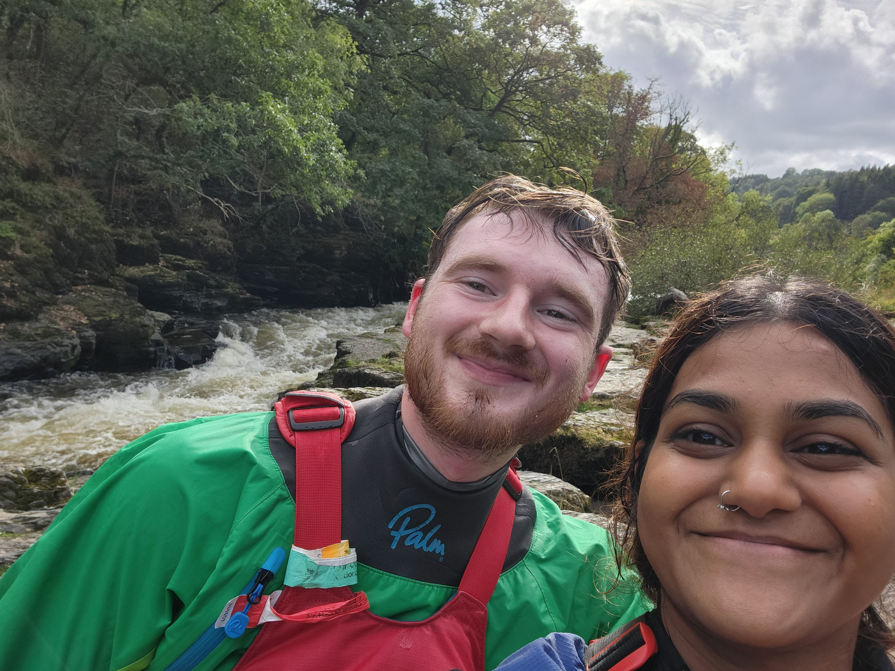

03/10/26: River Conwy, North Wales

Good day out with very nice weather. Only one rapid required safety being set, and one portage (for all but Joe and Toby)
13/09/26: River Dee, North Wales

The first paddle of the roguestate's trip log! Took my lovely girlfriend Chris for her first Dee lap (2nd time on a river). She was a bit scared and scowling at me at the start so we skipped serpents but after that she nailed every rapid and only swam once after getting flipped by a random rock. Good paddle tho and hopefully the first of many...